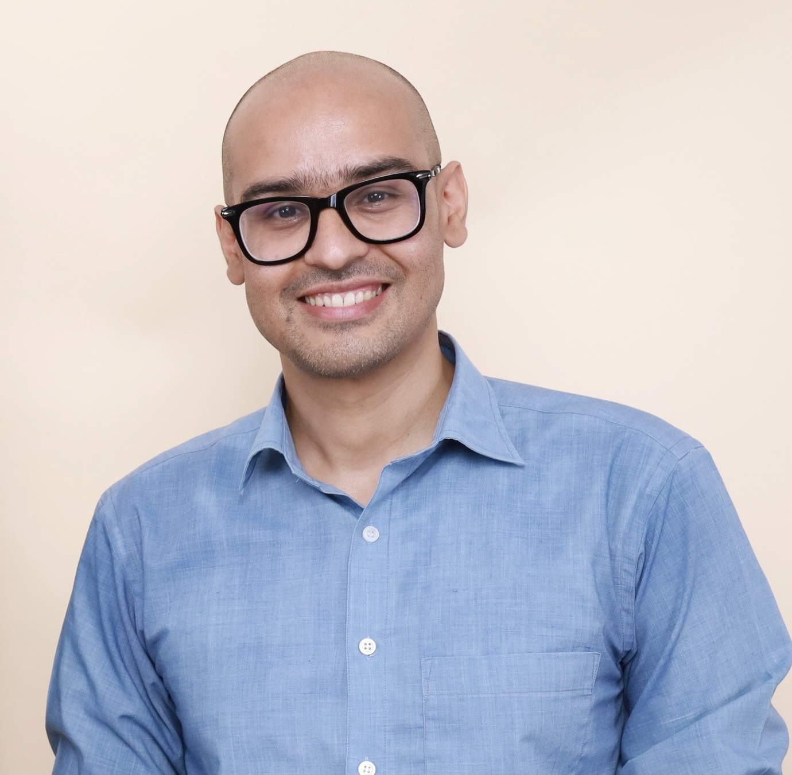

Remote Sensing & Geographic Information Systems
Geoscientist mapping glaciers, landslides and disaster risk across the Himalaya — and building open tools to make that science reproducible.

Get to know more
I work where mountains move — studying glaciers, landslides and floods, and turning satellite data and field measurements into hazard maps that local governments can act on.
My path began with a water-quality internship at the Nepal Academy of Science and Technology, then community-level disaster risk reduction with CRDS, geotechnical and slope-stability assessment for NDRRMA, and a GIS & DRR lead role at the Forum for Energy and Environment Development — where I helped install a pilot landslide early-warning system in Neelakantha. Most recently, as Early Action Coordinator with People in Need, I designed impact-based forecasting triggers with meteorological and government partners.
Today I'm a doctoral candidate in Remote Sensing & GIS at the Asian Institute of Technology, building open, dependency-free Python workflows (PyGILE) so that landslide and debris-flow modelling can be repeated by anyone, anywhere.
Asian Institute of Technology, Thailand
Advisor: Dr. Sarawut Ninsawat
Tri-Chandra Campus, Tribhuvan University, Nepal
Glacial surface lowering & supraglacial ponds, Khumbu Glacier, Everest region
Tri-Chandra Campus, Tribhuvan University, Nepal
Geological & engineering-geological mapping, Butwal–Tansen, Western Nepal
Explore my
Beyond the job
Built Python frameworks for landslide and debris-flow risk, and reproducible dependency-free Jupyter workflows (PyGILE / PyGILE-Plus).
Field glaciology on Khumbu Glacier — surface-lowering trends and supraglacial pond expansion via UAV mapping and remote sensing in the Dingboche region.
Laboratory water-quality assessment under national drinking-water standards and research on purification technologies.
Hands-on Python, machine learning and geospatial programming with containerized, reproducible Jupyter modules.
Trained 16 international students in QGIS-based spatial analysis for sustainable development.
GIS-based land-suitability analysis in QGIS and TerrSet, with slope-stability and factor-of-safety modelling in open-source Python.
Lectures and practical sessions on QGIS and remote-sensing applications for DRR and multidisciplinary planning.
The toolbox
On the ground
Landslide & flood hazard assessment across 20+ districts of Nepal, 2013–2024 — ground-truthing, local-government consultation, and validation of model-derived hazard maps.
UAV mapping and surface-lowering analysis on the Khumbu Glacier, Dingboche.
East & West Rapti, Babai, Duduwakhola and Tinau basins.
Geotechnical instrumentation for early warning, and slope-stability investigations.
Field survey and data collection across 10 municipalities.
Data collection for environmental impact assessments.
Field geological mapping in the central lowlands.
Selected writing
Devkota, S., Gautam, S., Acharya, G., Awasthi, B. & Adhikari, B.R. — Developing a community-based landslide early-warning system for data-scarce areas: a case of Neelakantha Municipality, Dhading, Nepal.
SSRN · DOI 10.2139/ssrn.4655307Awasthi, B., Ninsawat, S., Raghavan, V. & Nemoto, T. — PyGILE / PyGILE-Plus: a Python GeoInformatics Lab Environment (v1.0).
Workshop & oral presentation · FOSS4G Asia 2026, Nashik, India · DOI 10.5281/zenodo.16144781Awasthi, B., Goraju, S., Lohani, S., Karki, S., Devkota, S. & Bhatta, Y.R. — Predictive analytics for road-safety enhancement on the Mugling–Narayanghat road section, Nepal.
Int'l Conf. on Big Data for Disaster Response · ADB & Tohoku University, Sendai, Japan, 2024 (under revision)Awasthi, B., Gajurel, A., Tait, A., Elvin, S., Elmore, A.C., Putnam, A.E. et al. — Recent trend of glacial surface lowering in Khumbu Glacier, Everest region, Nepal.
Abstract 713477 · AGU Fall Meeting 2020Mattas, L.A., Putnam, A.E., Strand, P., Gajurel, A., Awasthi, B. et al. — Documenting the last glacial maximum and termination of the Khumbu Glacier, Nepalese Himalaya.
GC53G-1237 · AGU Fall Meeting 2019, San FranciscoMaganini, M., Awasthi, B. & Albayrak, A. — Assessing landslide hazards from space.
Notes from the Field · NASA Earth Observatory, 2025Awasthi, B. — Strengthening community ties through disaster preparedness and early action in Nepal · The geological connection of religious sites in Nepal · and other essays.
Onlinekhabar, 2022–2024Recognition
Asian Institute of Technology, Thailand — full tuition, registration and living support.
With Tribhuvan University, Nepal — financial support for master's thesis research on the Khumbu Glacier.
Get in touch
Working on glaciers, hazards or open geospatial tools? Let's talk.